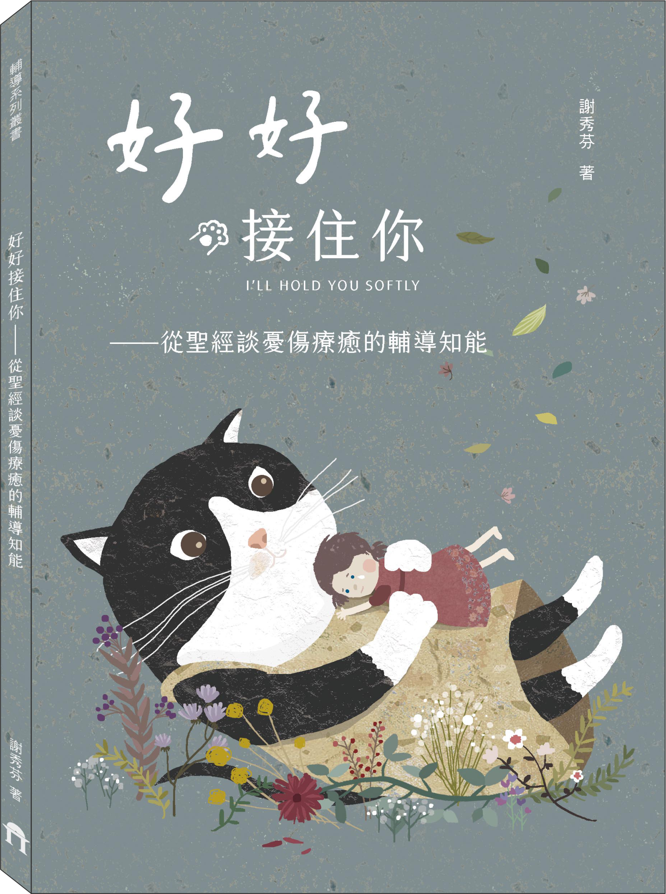
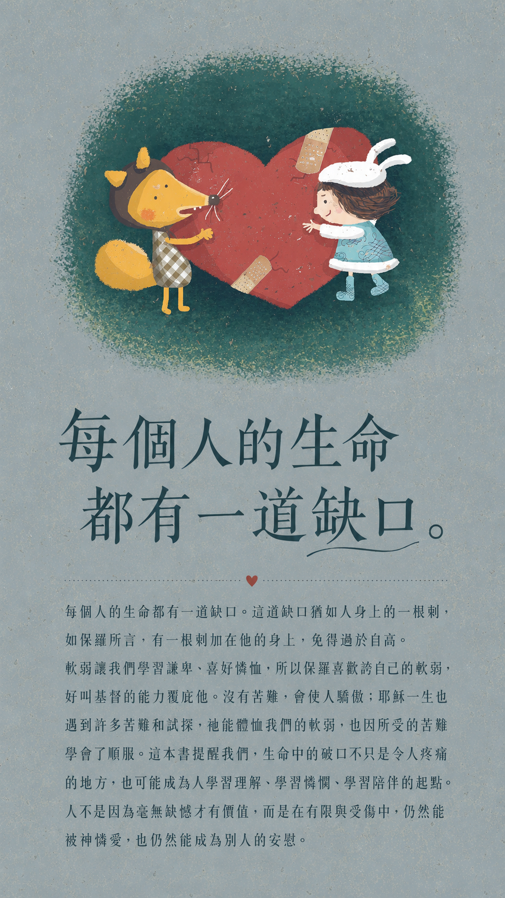
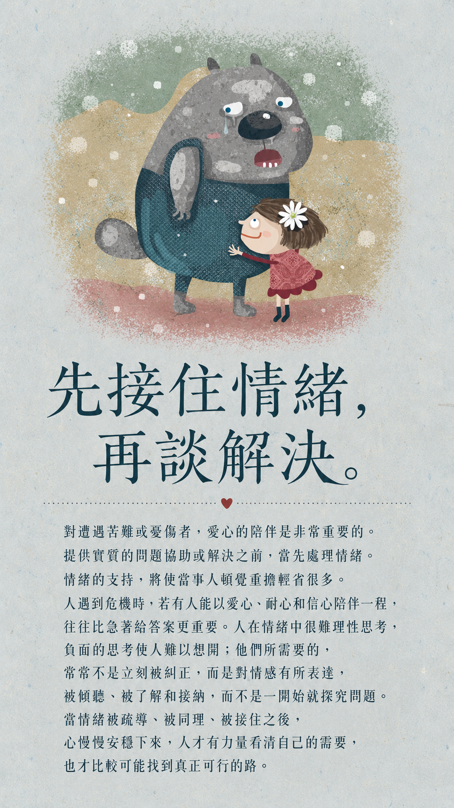
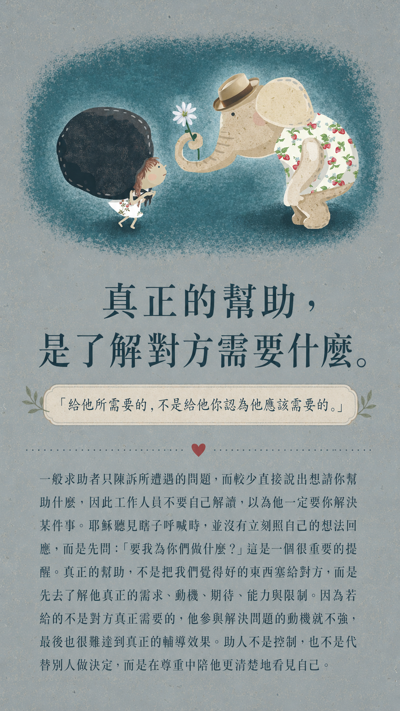
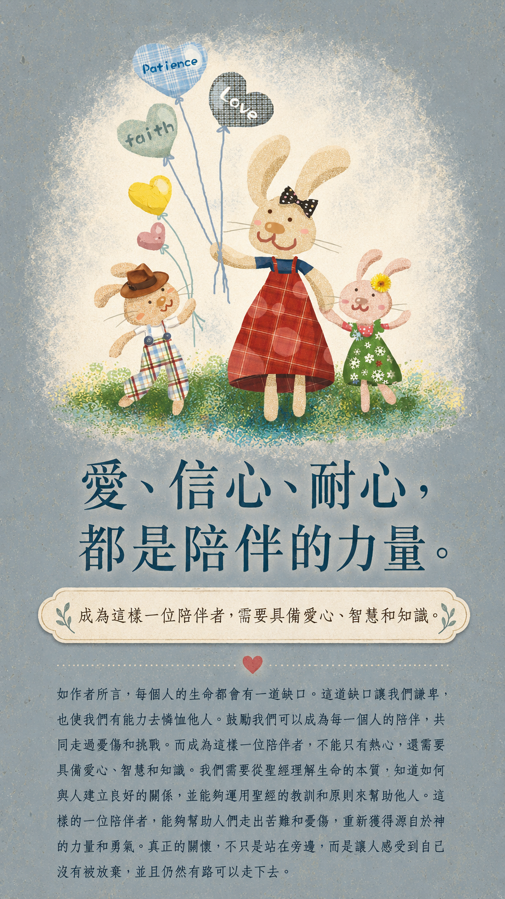
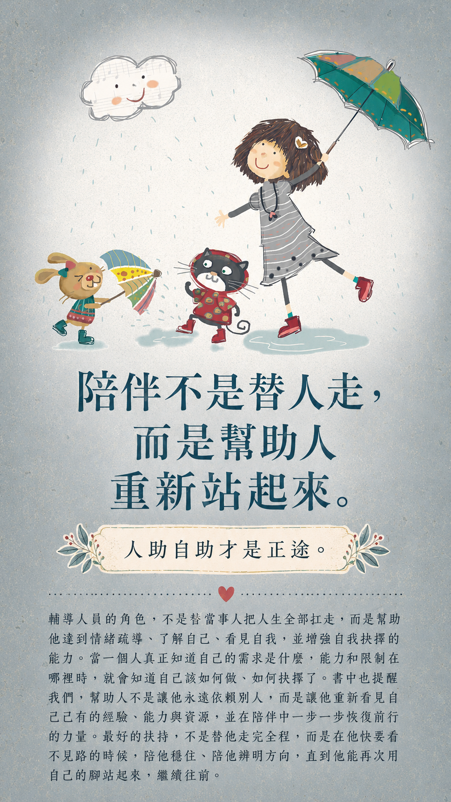

Limited Offer
專屬限時典藏優惠
原價 NT$250
NT$198
79折 暖心回饋
優惠至 2026/09/30 止。
I'll Hold You Softly
從聖經真理淬鍊的憂傷療癒與輔導智慧
真正的安慰，從不只是說句「不要難過」。本書結合聖經真理與專業輔導知能，帶您深刻讀懂憂傷背後的情緒語言。 資深社工謝秀芬教授濃縮多年實務經驗，為您鋪展一條溫柔且踏實的陪伴之路——讓我們學會先承接自己的脆弱，進而成為他人生命中安定的力量。

Core Insight
從認知「生命皆有缺口」到實踐「助人自助」，本書將聖經裡深邃的憐憫、尊重與真理， 轉化為您在真實生活處境中，隨時能派上用場的溫暖陪伴學。
當人深陷難過、焦慮與混亂時，理性往往缺席。本書帶您看見「先處理情緒，再處理問題」的重要性； 唯有被無條件接納、傾聽與同理，我們才能在迷霧中摸索出真實的渴求。
真正的愛，不是將自認的「好」強加於人，而是效法耶穌的柔和謙卑，探問對方的真正期盼。 看懂並尊重對方的動機、能力與限制，才是精準而有效的陪伴。
陪伴者並非解決所有難題的萬靈丹，更不是代替當事人過活。本書反覆提點：最高境界的扶持， 是協助對方梳理情緒、盤點資源並做出選擇，最終讓對方長出直面人生的強大韌性。
Gallery





C002
陪伴不需要華麗的詞彙，而是真實的靠近。這本小書將聖經裡的憐憫化作實用提醒， 不論是留給自己沉澱，或是送給正在服事他人的好友，都能有所幫助。